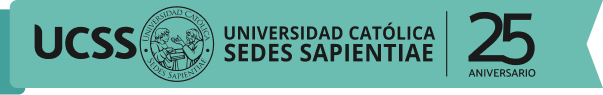
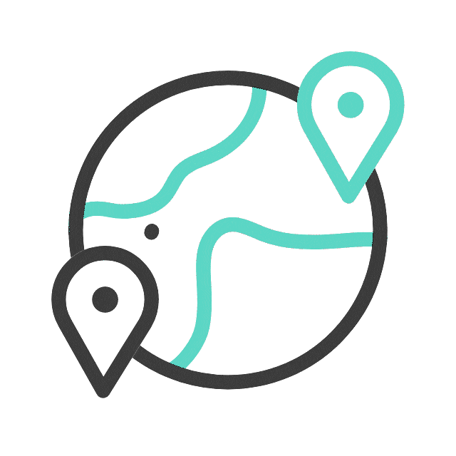
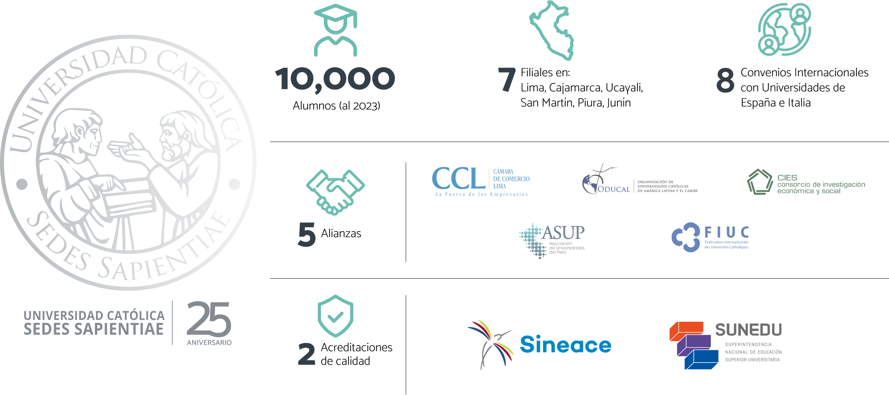

MAESTRÍAS 100% VIRTUAL
¡Evoluciona y potencia tu liderazgo!
Maestrías online en negocios, salud y educación
#AvanzaConUCSSonline
MAESTRÍAS ONLINE
¿Por qué estudiar en UCSS online?

25 años formando profesionales empáticos y solidarios para resolver los desafíos empresariales con valores

Tecnología moderna para estudiar desde cualquier dispositivo
Profesores capacitados, con títulos avanzados y experiencia en su sector

Intercambios con universidades en España e Italia

Precios alcanzables y facilidades de pago
Acompañamiento personalizado con mentores durante toda tu carrera
MAESTRÍAS ONLINE
Conoce nuestra oferta online
MAESTRÍA EN
ADMINISTRACIÓN DE NEGOCIOS Y FINANZAS INTERNACIONALES - MBA INTERNACIONAL
ONLINE
FACULTAD DE
CIENCIAS ECONÓMICAS Y COMERCIALES
MAESTRÍA EN
ADMINISTRACIÓN PÚBLICA
ONLINE
FACULTAD DE
CIENCIAS ECONÓMICAS Y COMERCIALES
MAESTRÍA EN
GESTIÓN E INNOVACIÓN EDUCATIVA
ONLINE
FACULTAD DE
CIENCIAS DE LA EDUCACIÓN Y HUMANIDADES
MAESTRÍA EN
PSICOPEDAGOGÍA Y ORIENTACIÓN
TUTORIAL EDUCATIVA
ONLINE
FACULTAD DE
CIENCIAS DE LA EDUCACIÓN Y HUMANIDADES
MAESTRÍA EN
ADMINISTRACIÓN DE NEGOCIOS Y FINANZAS INTERNACIONALES - MBA INTERNACIONAL
ONLINE
FACULTAD DE
CIENCIAS ECONÓMICAS Y COMERCIALES
MAESTRÍA EN
ADMINISTRACIÓN PÚBLICA
ONLINE
FACULTAD DE
CIENCIAS ECONÓMICAS Y COMERCIALES
MAESTRÍA EN
PSICOPEDAGOGÍA Y ORIENTACIÓN
TUTORIAL EDUCATIVA
ONLINE
FACULTAD DE
CIENCIAS DE LA EDUCACIÓN Y HUMANIDADES
MAESTRÍA EN
GESTIÓN E INNOVACIÓN EDUCATIVA
ONLINE
FACULTAD DE
CIENCIAS DE LA EDUCACIÓN Y HUMANIDADES
MAESTRÍAS ONLINE
Postula aquí
Te invitamos a compartir tus datos para que nuestro equipo de admisiones te contacte y conozcas los beneficios de nuestros programas
MAESTRÍAS ONLINE
Logros Universidad Católica Sedes Sapientiae


MAESTRÍAS ONLINE
Preguntas frecuentes
Aquí te presentamos algunas preguntas frecuentes que las personas suelen hacer cuando están considerando hacer un posgrado en línea:
¿Qué son las maestrías virtuales?
Las maestrías virtuales son programas de posgrado que se imparten a través de internet, permitiendo a los estudiantes completar sus estudios sin necesidad de asistir físicamente a clases en un campus. También se conocen como maestrías en línea, maestrías a distancia, maestrías semipresenciales, maestrías en remoto o maestrías online. Esta modalidad ofrece flexibilidad para acceder a los materiales de estudio y realizar las tareas según el horario y ubicación del estudiante.
En UCSS virtual, ofrecemos maestrías online acreditadas y reconocidas por SUNEDU que te otorgan una titulación oficial al completar con éxito tus estudios, con la misma validez que los programas presenciales tradicionales.
¿Cuáles son las ventajas de una maestría virtual?
- Flexibilidad de horarios:
Puedes estudiar cuando mejor te convenga y adaptar tus estudios a tus compromisos personales o laborales.
- Ahorro de tiempo y dinero:
Al no tener que desplazarte al campus todos los días, ahorras dinero en transporte y manutención, y tiempo en viajes.
- Interacción en línea:
Puedes comunicarte con tus profesores y compañeros durante las clases por medio del computador, celular o herramienta digital que tú prefieras.
- Acceso a recursos en línea:
Tienes a tu disposición materiales de estudio, conferencias grabadas, foros de discusión y otros recursos en internet que enriquecen tu proceso de aprendizaje.
¿Cuál es la duración típica de una maestría virtual?
En UCSS virtual, las maestrías virtuales tienen una duración similar a las maestrías presenciales tradicionales, generalmente de dos años (4 ciclos).
¿Qué ventajas ofrecen las maestrías a distancia en Perú?
Las maestrías a distancia en Perú ofrecen flexibilidad en los horarios y la opción de estudiar desde cualquier lugar con conexión a internet. Esto te permitirá adaptar tus estudios a tus compromisos laborales y personales, ajustando tus horarios como más te convenga, lo que hace más fácil combinar la educación con otras responsabilidades. Elige una de nuestras maestrías a distancia y disfruta de todas estas ventajas con UCSS virtual.
¿Por qué elegir una maestría virtual en UCSS virtual?
En UCSS virtual, encontrarás más que una universidad una comunidad comprometida con el bien común. Además de recibir una formación académica de calidad, serás parte de una comunidad basada en valores como respeto, humildad, tolerancia, responsabilidad, cooperación, honestidad y sencillez. Contarás con convenios internacionales con universidades en España e Italia y garantizas tomar una educación de excelencia certificada con nuestras acreditaciones de calidad.
- Flexibilidad y comodidad a tu medida:
Estudiar una maestría online en UCSS virtual te permite adaptar tu educación a tu ritmo y estilo de vida. Con clases virtuales en vivo y grabadas, son ideales para quienes trabajan, tienen responsabilidades familiares o viven en zonas alejadas.
- Formación de calidad con reconocimiento:
Obtendrás la misma excelencia académica que en programas presenciales con docentes calificados y con experiencia. Además, UCSS virtual es una universidad reconocida por SUNEDU, lo que garantiza la calidad de tu educación.
- Experiencia personalizada y acompañamiento constante:
En UCSS virtual, puedes estudiar una maestría online de manera más fácil y a un precio alcanzable. Siempre estarás acompañado en tu camino hacia el logro de tus metas. Contamos con clases flexibles que se ajustan a tu horario y precios que puedes pagar. Además, nuestras maestrías online te permiten estudiar desde cualquier lugar con conexión a internet. Así, podrás mejorar tu calidad de vida y la de tu familia sin importar las circunstancias.
¿Qué Maestrías hay para gente que trabaja?
En UCSS virtual, hemos diseñado diferentes programas de postgrado 100% online, los cuales son
¿Cuáles son los requisitos tecnológicos para hacer una maestría en línea?
Las universidades online en Perú ofrecen flexibilidad horaria, acceso desde cualquier lugar con conexión a internet y una amplia variedad de programas académicos. Además, permiten a los estudiantes gestionar sus carreras de manera autónoma y adaptar su aprendizaje a sus necesidades individuales. Es importante verificar la validez y la reputación de la universidad antes de inscribirse en cualquier programa de estudio en línea. En UCSS virtual contamos con 25 años de experiencia, tenemos diversas acreditaciones y estamos reconocidos por SUNEDU.
¿Cómo será mi título de maestría?
Recibirás un título tradicional de maestro, tal y como lo recibirías si estudiaras en la modalidad presencial. Los títulos de maestría, ya sean obtenidos de manera presencial o virtual (online, semipresencial o a distancia), tienen la misma validez y reconocimiento, la modalidad no aparece en el diploma.